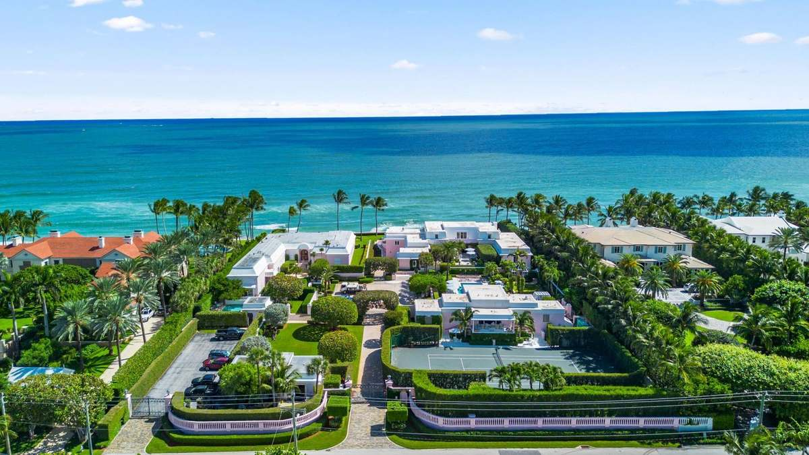
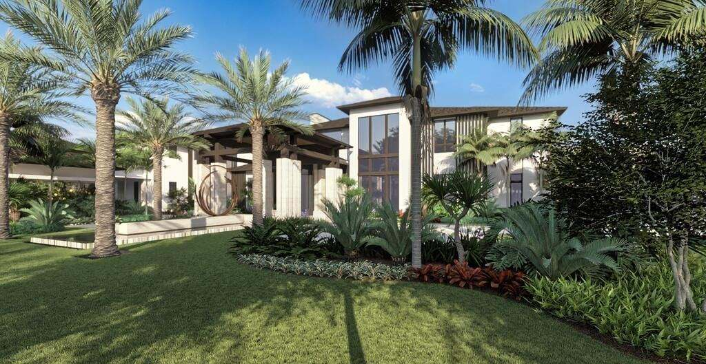
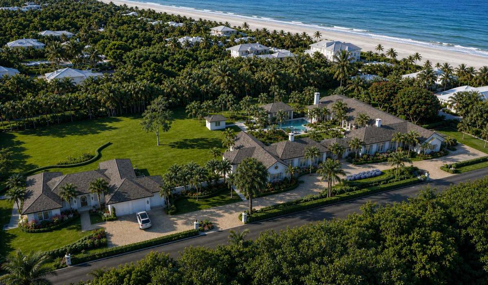
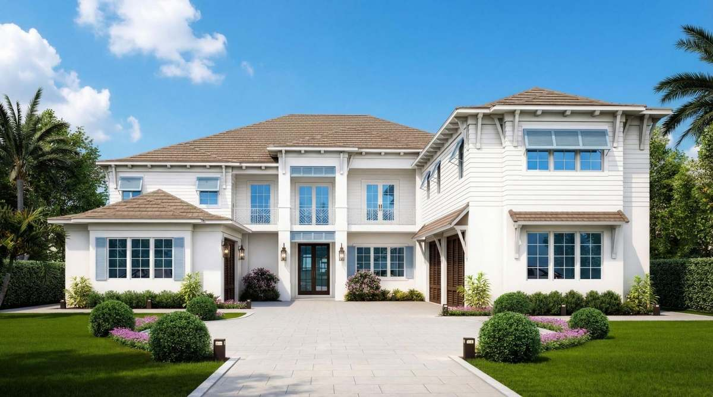
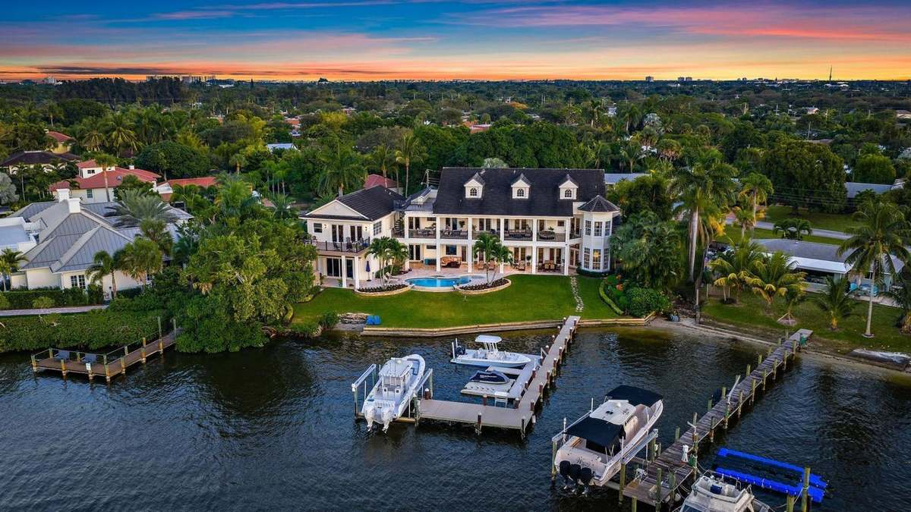
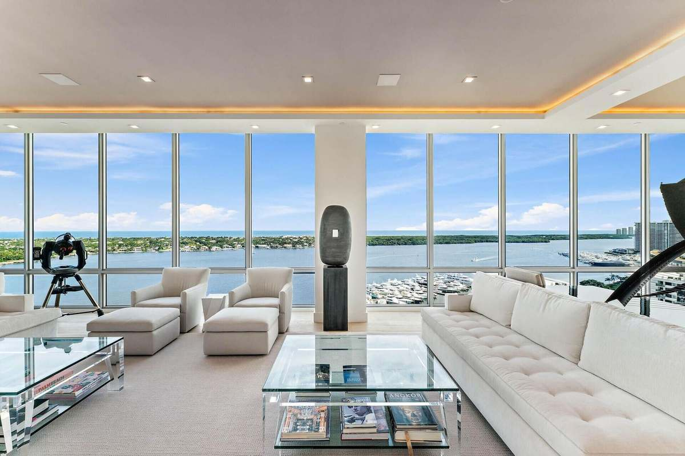
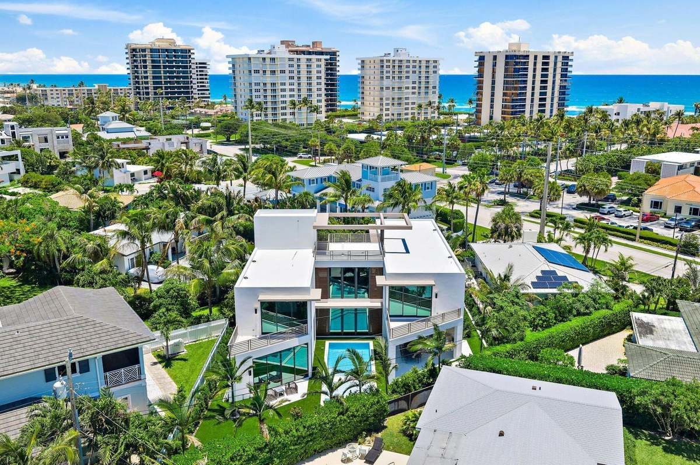

Guiding You
Home
Specializing in luxury waterfront and estate properties in Jupiter, Palm Beach Gardens, Tequesta, and beyond.
View PropertiesAaron Foor
Aaron Foor leads The Foor Group at Illustrated Properties, helping buyers and sellers throughout Jupiter and the surrounding areas with a personal, straightforward approach to real estate.
Aaron believes buying or selling a home shouldn't feel like being handed off to a call center — or buried under a mountain of paperwork you're somehow expected to understand. He combines honest communication, local knowledge, modern marketing, and the resources of Illustrated Properties to help clients move forward with clarity and confidence.
Whether you're buying your first home, selling a property, relocating, or simply exploring your options, Aaron starts by listening to what matters most to you. From there, he provides practical guidance and a strategy built around your goals.
Aaron has lived in many places throughout the country, but he chose Jupiter, Florida, to call home. Much like the Jupiter Inlet Lighthouse has guided people home for generations, let The Foor Group help guide you home.
Areas We Serve
Local guides to every community Aaron serves across Jupiter, the Treasure Coast, and Palm Beach County.
Interactive Tools
Explore our area guides, run the numbers, or get an estimate on your home — no appointment needed.
This is a simplified estimate for planning purposes only — it assumes flat property tax, insurance, and maintenance on today's price, and doesn't account for closing costs, PMI, or tax deductions. Talk to Aaron for a full picture specific to your situation.
Tell us about your property and Aaron will follow up personally with a complimentary market valuation.
Get VIP Access to Off-Market Listings
Many of Aaron's finest listings sell before they ever hit the public MLS. Join the VIP list to see off-market and coming-soon luxury properties across Jupiter and the surrounding areas before anyone else.
Tell us what you're looking for and Aaron will personally notify you the moment a matching property hits the market.
Moving to the Jupiter & Palm Beach Area
Our complete relocation checklist — from financing and choosing your area through closing, utilities, and settling in. Enter your email and it's yours instantly.
Request an Agent Referral
Buying or selling outside Aaron's primary Florida markets? Through Illustrated Properties' membership in Leading Real Estate Companies of the World® (LeadingRE), he can help you find a skilled, trusted agent where you need one — a vetted introduction, not a random online search.
LeadingRE is a premier global network of roughly 500 firms and 130,000+ sales associates in 70 countries. Illustrated Properties is also a founding member of Luxury Portfolio International®.
Florida has no state income tax. This estimate applies each state's top marginal income tax rate to your income as a simple illustration — actual liability depends on your bracket, deductions, and filing status. Not tax advice; consult a CPA for your specific situation.
Why Choose The Foor Group
Discreet representation, strategic insight, and white-glove service at every stage of your journey.
Local Expertise
Deep knowledge of Jupiter, Palm Beach Gardens, and Tequesta — and beyond, spanning waterfront estates along the Loxahatchee River and Intracoastal to master-planned communities throughout Palm Beach and Martin Counties.
Global Reach
Through Forbes Global Properties and Illustrated Properties, your listing gains exposure to a worldwide audience of qualified luxury buyers.
Strategic Marketing
Data-driven pricing, cinematic photography, and targeted digital campaigns designed to position your property at the pinnacle of the market.
White-Glove Service
From private showings to closing coordination, every detail is managed with precision, discretion, and an unwavering commitment to your goals.
Honest Counsel
Straightforward advice from the first conversation to the closing table — including the pros and the cons. The relationship comes first, not the commission.
Built on Referrals
Much of The Foor Group's business comes from repeat clients and personal referrals — the clearest sign of a job done right, and the standard every new relationship is held to.
Trusted Worldwide


Featured Listings
Hand-selected luxury properties across Palm Beach and Martin Counties — from Jupiter and Palm Beach Gardens to Tequesta and beyond.

Contact Aaron Foor

Contact Aaron Foor

Contact Aaron Foor
Contact Aaron Foor
Contact Aaron Foor

Contact Aaron Foor

Contact Aaron Foor

Contact Aaron Foor

Contact Aaron Foor
New Construction
Build the Life You've Been Imagining
Step into never-lived-in luxury across Jupiter, Palm Beach Gardens, Tequesta, and beyond — spanning Palm Beach and Martin Counties, from waterfront custom estates to master-planned communities with resort-style amenities.
Custom Estates
Architect-designed residences on premier waterfront and golf course lots.
Master-Planned
Gated communities with pools, clubhouses, trails, and concierge living.
Smart & Sustainable
Energy-efficient builds with the latest smart-home technology built in.
Rentals & Leasing
Annual leases and vacation/seasonal rentals throughout Jupiter, Palm Beach Gardens, Tequesta, and the surrounding areas.
Vacation Rentals
1–11 month seasonal and vacation stays — snowbird seasons, short assignments, and flexible coastal living. Terms vary by property; always confirm availability and HOA rules.
- Seasonal / short-term lease periods
- Often furnished or turnkey
- HOA and community rental caps may apply
- Stays of six months or less typically trigger Florida sales tax, county surtax, and county tourist tax — see below
Annual Rentals
Typically 12-month (or longer) residential leases for full-time living — primary residences, corporate housing, and year-round Jupiter-area lifestyles.
- Year-round occupancy focus
- Often unfurnished or lightly furnished
- Standard residential lease practices
- Generally not subject to state transient tax or county tourist tax when a bona fide written lease exceeds six months
Taxes on Vacation & Short-Term Rentals
Lodging of six months or less is treated as a transient rental in Florida. Guests typically see three stacked taxes — not just the county "bed tax." Longer, bona fide written leases (over six months) are usually exempt from these transient taxes.
| County | FL State Tax | County Surtax | County TDT (Bed Tax) | Approx. Total |
|---|---|---|---|---|
| Palm Beach | 6% | 0.5% | 6% | 12.5% |
| Martin | 6% | 0.5% | 5% | 11.5% |
| St. Lucie | 6% | 1.0% | 5% | 12% |
Legal responsibility to collect and remit these taxes rests with the property owner or operator. For short-term stays, these taxes are typically charged to the guest up front. Rates can change — verify current rates before booking or listing. Sources: Palm Beach County Tax Collector, Martin County Tax Collector, St. Lucie County, Florida DOR.
Looking to lease a luxury property, or list your home for rent? Share your needs below and Aaron will follow up personally.
Explore Every Town
Explore lifestyle guides with local attractions, dining, activities, schools, and curated community highlights.
Services
Comprehensive representation for discerning buyers and sellers of luxury coastal property.
Buyer Representation
Off-market access, private tours, and expert negotiation to secure your ideal Jupiter-area residence.
Buyer's Guide →Seller Representation
Strategic pricing, premium staging guidance, and global marketing through Forbes Global Properties.
Seller's Guide →Luxury Marketing
Cinematic media, targeted digital campaigns, and exclusive network exposure for exceptional properties.
See Our Marketing →Relocation & Investment
Seamless transitions for relocating executives and investors seeking South Florida's strongest growth corridors.
Compare Markets →Agent Referrals
Outside Florida or beyond our primary markets? Aaron can connect you with a trusted LeadingRE agent near you.
Request a Referral →Private & Off-Market Opportunities
Discreet access to pocket listings and off-market properties throughout Jupiter, Palm Beach Gardens, and Tequesta, before they ever reach the open market.
Get In Touch →Testimonials
If The Foor Group has helped you buy or sell throughout Jupiter, Palm Beach County, or the Treasure Coast, your words mean a great deal to future clients.
From the Blog
Perspectives on Florida luxury real estate — buying, selling, relocation, and market trends across Jupiter, Palm Beach Gardens, Tequesta, and beyond.
Resources
Guides, market insights, and tools to inform your next move.
Buyer's Guide
Everything you need to know before purchasing in Jupiter, Palm Beach Gardens, and Tequesta.
Seller's Guide
Strategies to maximize value and minimize time on market.
Home Value Estimator
Get an instant estimate of your property's current market value.
Frequently Asked Questions
Straight answers about working with Aaron across Jupiter and the surrounding areas.
Aaron Foor is the founder of The Foor Group at Illustrated Properties, based in Jupiter, Florida. He helps buyers and sellers throughout Jupiter, Tequesta, Palm Beach Gardens, and the surrounding Treasure Coast and Palm Beach County markets, with a personal, straightforward approach to real estate — and, through Illustrated Properties, access to the Forbes Global Properties, Leading Real Estate Companies of the World, and Luxury Portfolio International networks.
Aaron works throughout Jupiter, Jupiter Island, Tequesta, Palm Beach Gardens, and neighboring communities from Palm Beach to the Treasure Coast — 19 towns in all. Browse the area guides above for details on each one.
Use the "Explore Listings" link to search current inventory, or reach out directly and Aaron can send you off-market and newly listed options that match what you're looking for.
Conditions vary block by block in this part of Florida. Reach out and Aaron can walk you through current pricing, inventory, and days-on-market for the specific neighborhood or price point you're watching.
Aaron starts with a conversation about your goals and timeline, then builds a pricing and marketing strategy around them — including professional photography, targeted digital campaigns, and exposure through Illustrated Properties' global network. Visit the Seller's Guide or reach out to get started.
Yes — relocation is a core part of Aaron's business. He can help you get oriented to the different towns, schools, and commutes across Jupiter and the surrounding areas before and during your search.
Aaron works with buyers and sellers across a range of price points, not just top-tier luxury. Reach out and he'll be direct with you about whether he's the right fit or a better referral for your specific search.
Yes — through the LeadingRE network, Aaron can connect you with a trusted, vetted agent in most markets outside of Florida.
Follow The Foor Group
Listings, market updates, and behind-the-scenes from Jupiter and the surrounding areas.
The Foor Group
@thefoorgroup — listings, market updates, and behind-the-scenes.
Aaron Foor
@aaronfoorrealtor — Aaron's personal page.
Facebook
Listings, open houses, and local updates.
TikTok
@aaronfoorrealtor — quick tours and local tips.
YouTube
@thefoorgroup — property walkthroughs and area guides.